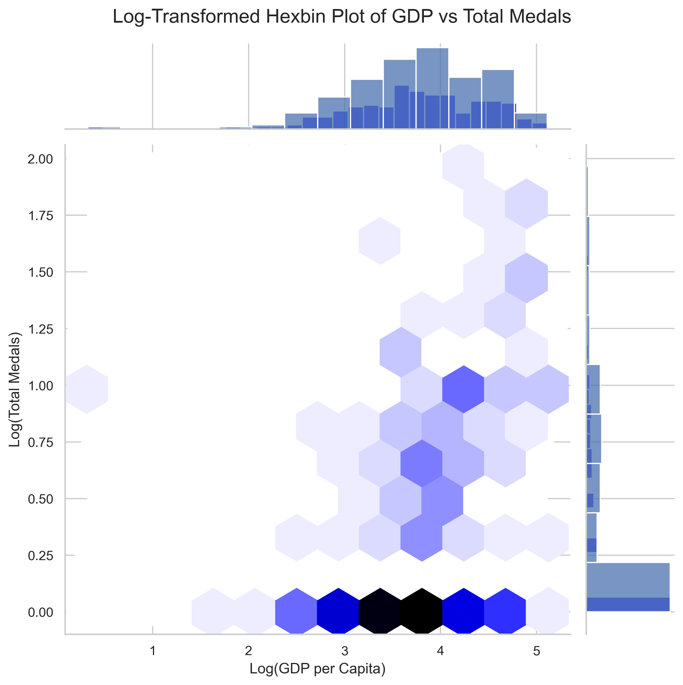
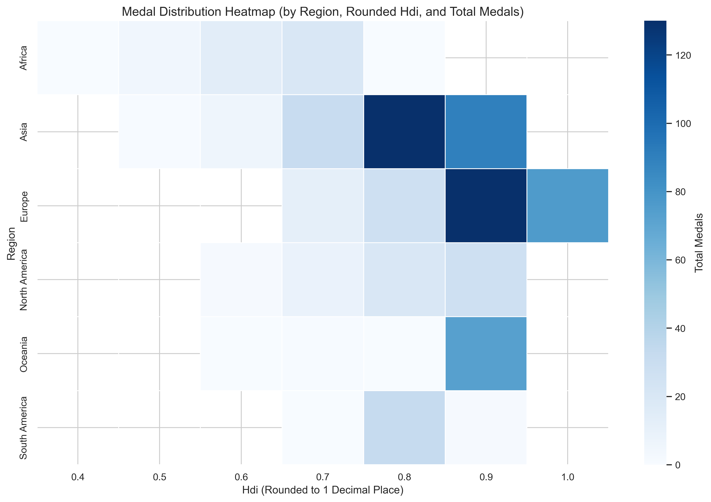
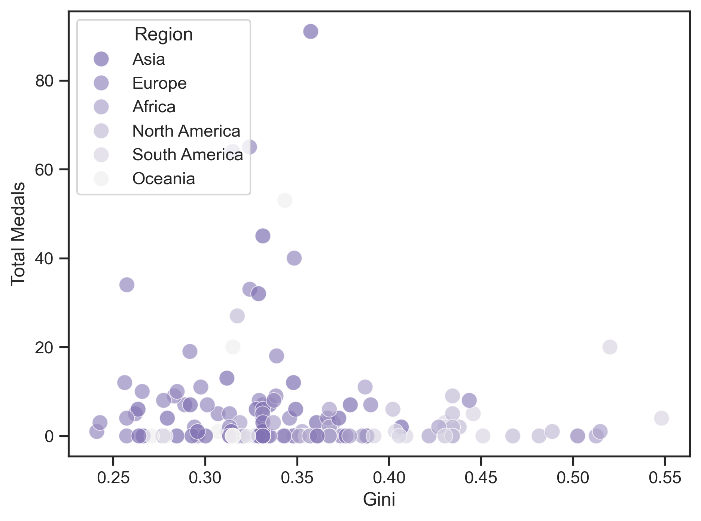

Introduction
The 2024 Paris Olympics were exciting for everyone. The number of medals won showed significant variation; some countries won no medals at all, while countries like the United States won dozens. So, is there a connection between these variations in medal counts? Countries' levels of development are measured by many different parameters. The Human Development Index (HDI) is a measure of a country's human development. A higher HDI score usually indicates longer life expectancy, better education levels, and higher Gross National Income (GNI) per capita. Gross Domestic Product (GDP) is a monetary measure of the market value of all final goods and services produced by a country within a specific period of time. The Gini coefficient measures income inequality within a population. Developed countries tend to outperform developing and underdeveloped nations in many areas, including art, technology, health, and sports. So, did the level of development in countries help them win medals at the Paris 2024 Summer Olympics? We will investigate this through HDI, Gini Coefficient, and GDP.
Visualizations
This hexbin plot, which represents the log-transformed GDP per capita and total medals, reveals a positive correlation between a country's economic strength and its success in winning medals. Higher densities of data points are observed in the range of log(GDP per capita) between 3.5 and 4.5, corresponding to nations with mid-to-high GDP per capita values, where total medal counts also tend to be higher (log(Total Medals) around 1 to 2). Countries with lower log(GDP per capita) (below 3) are predominantly clustered around lower total medal counts, highlighting the influence of economic resources on sports success. The distribution patterns further emphasize that while high GDP often aligns with athletic performance, some nations achieve moderate medal success despite lower GDP, suggesting other contributing factors such as targeted sports policies, cultural emphasis on athletics, or government support. This relationship underscores the importance of economic investment in fostering international sports achievements.
The heatmap reveals a strong correlation between higher Human Development Index (HDI) values and total medal counts, with regions like Europe and North America dominating in medal distribution, particularly at HDI levels of 0.8 and above. This suggests that well-developed regions benefit from better resources, infrastructure, and opportunities for athletic success. In contrast, regions with lower HDI values, such as Africa, show significantly lower medal counts, highlighting disparities in access to sports development and investment. Oceania, despite relatively high HDI values, shows moderate medal counts, indicating potential for growth through targeted sports initiatives. Overall, the data emphasizes the influence of socio-economic factors on global sports performance and the need for strategic investments to bridge the gap in underrepresented regions.
This scatterplot examines the relationship between a country's Gini coefficient (a measure of income inequality) and total medals won, categorized by region. The plot shows that countries with lower Gini coefficients, indicating more equitable income distribution, tend to cluster around higher medal counts, particularly in regions like Europe and North America. Conversely, countries with higher Gini coefficients generally have fewer medals, suggesting that greater income inequality may limit access to resources and opportunities needed for athletic success. There are notable outliers, particularly in regions like Asia and Europe, where some countries achieve high medal counts despite moderate Gini levels, likely reflecting targeted investments in sports infrastructure and training. Overall, the plot highlights a potential inverse relationship between inequality and sports performance, with equity playing a role in fostering athletic achievement.

The regression analysis reveals that the model's Mean Squared Error (MSE) is 45.084, indicating a moderate level of accuracy in predicting total medals, with lower values signifying better performance. The R-squared value of 0.139 suggests that only 13.9% of the variance in the dependent variable is explained by the model, highlighting potential limitations in its explanatory power, while the adjusted R-squared of 0.092 adjusts for non-significant variables. The F-statistic of 2.928 and its corresponding p-value of 0.00464 show that the model is statistically significant overall, with GDP emerging as a meaningful predictor (p=0.042), albeit with a very small positive effect (coefficient = 0.0001). Other variables, including Gini, HDI, and regional codes, were not statistically significant, with p-values exceeding 0.05. The high condition number (6.7e+05) signals potential multicollinearity issues, which could undermine the model’s stability. Despite the Durbin-Watson statistic of 1.909 indicating no significant autocorrelation in residuals, addressing multicollinearity, removing insignificant predictors, or refining data preprocessing could improve the model's performance and reliability.